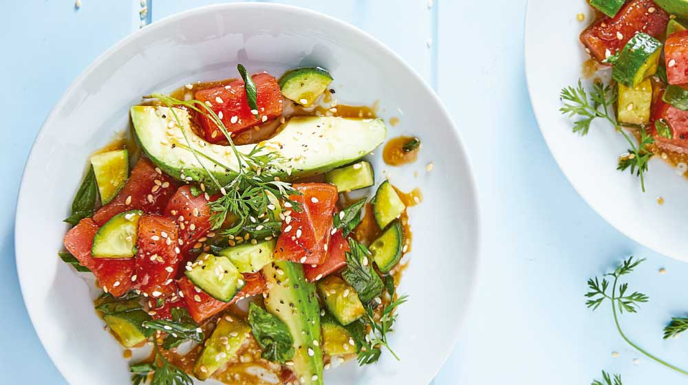

ENSALADAS
Ensalada De Atún y Aguacate

Espectativa
Ingredientes:
- 500 g de atún fresco en cubos
- 4 pepinillos rebanados
- 1 aguacate en gajos
- 1 cucharada de ajonjolí
- 4 cucharadas de soya
- 2 cucharadas de aceite de ajonjolí
- 5 cucharadas de jugo de limón
Pasos:
- Mezcla todos los ingredientes en un tazón, salpimenta y sirve de inmediato.


Este es un sitio de recetas rápidas que puedes hacer facilmente para una reunión, sorpresa, algo casual o simplemente para ti.